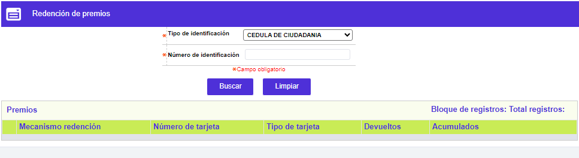
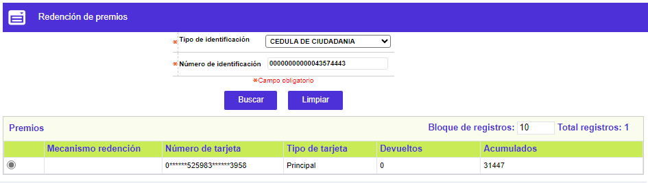
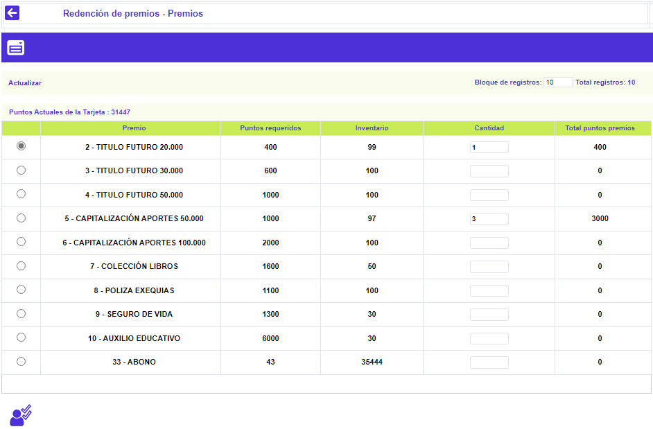
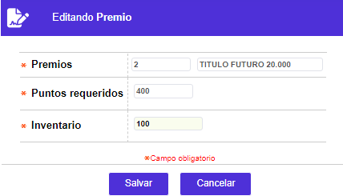

Redención premios
Este formulario ofrece una doble funcionalidad, de un lado permite conocer la cantidad de puntos de que dispone un cliente por tarjeta(s) y, de otro lado, la(s) clase(s) de premio(s) que puede redimir, si los puntos disponibles lo permiten.
Filtro: Al invocarse se despliega en modo consulta o filtro, debiendo disponer de los datos de tipo y número de identificación del tarjetahabiente:

Una vez activado el botón Buscar, se muestra información en el bloque inferior, además del enlace Premios.

Descripción De Campos
|
Mecanismo de redención |
Campo de salida que muestra el mecanismo asociado al producto en la opción esquemas de puntaje del mismo módulo, y que a excepción del mecanismo de Abono, los datos correspondientes a Millas y Premios son reflejados en los bloques subsiguientes. |
|
Número de tarjeta |
Contiene el número de cada una de las tarjetas que posea el cliente y cuyo producto asociado se encuentre parametrizado en alguno de los esquemas de puntaje. |
|
Tipo de tarjeta |
Indica la clase tarjeta: Principal o Extendida, asociada al número anterior. |
|
Devueltos |
En este campo aparece la información concerniente a los puntos que se le han reintegrado al cliente por concepto de reversiones de premios. |
|
Acumulados |
En este campo se muestran los puntos disponibles que el cliente posee a la fecha de la redención de puntos; una vez se grabe la redención en curso (la que se está registrando), la pantalla actualiza el nuevo monto. |
Premios: Al invocarse este enlace, se despliega un formulario en el que, además de ilustrar los diferentes premios (mercancías, electrodomésticos, etc.), u otros beneficios, disponibilidad de existencias para su redención, permitiendo indicar la cantidad de cada uno de ellos, y reflejando el total de puntos a utilizar o deducir, por cada premio. En adición, el formulario cuenta con el enlace Actualizar y con el botón especial Ejecutar redención.

|
Premio |
En este campo, no editable, se muestran los distintos registros creados en la opción Premios puntaje para, que a partir de esa información el tarjetahabiente, tome la decisión de cómo redimir sus puntos disponibles. |
|
Puntos requeridos |
En este campo, no editable, se muestra, la cantidad de puntos que se deben restar o descontar del total de puntos disponibles del cliente, por cada unidad del mismo que éste redima, valor definido en la opción Premios puntaje. |
|
Cantidad |
Campo numérico, en el que se digita la cantidad de unidades del premio que el cliente desea redimir. |
|
Total puntos premios |
Campo de salida o no editable, en el que se ilustra el resultado de la operación matemática, de multiplicar la cantidad de puntos requeridos por el número de unidades del premio que el cliente desea redimir. |
Actualizar: Al invocar ese enlace, el sistema despliega el siguiente formulario, con los datos del premio desde en cual fue activado, donde el único campo modificable es Inventario y lo que permite es actualizar el saldo de unidades de dicho producto.

|
Ejecutar redención: Al activar este botón, el sistema realiza diferentes validaciones, tales como, que los posibles bloqueos de la tarjeta no sean impedimento, que la cantidad de puntos a redimir no supere el total de puntos disponibles, entre otras. |